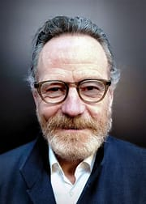

Credits
Bryan Cranston - Walter White
Bryan Lee Cranston was born in Hollywood, Los Angeles, on March 7, 1956, the second of three children born to Annalisa "Peggy" (née Sell), a radio actress, and Joseph Cranston, an actor and former amateur boxer.
Aaron Paul - Jesse Pinkman

Aaron Paul was born Aaron Paul Sturtevant,[4] in Emmett, Idaho,[5] on August 27, 1979,[6] the youngest of four children born to Darla (née Haynes) and Baptist minister Robert Sturtevant.[7][8] He was born a month premature in his parents' bathroom.[4] He grew up participating in church plays.
Anna Gunn - Skylar White

Born Anna Kathryn Gunn on August 11, 1968,[2] Gunn grew up in Santa Fe, New Mexico,[3] the daughter of Shana (née Peters; 1942–2022) and Clemens Earl Gunn Jr. (1939 - 2024).[4][5] She has one brother named Matthew.[6] Through his son Luther, she is the great-great granddaughter of William Rufus Day, who was an associate justice of the Supreme Court of the United States
Dean Norris - Hank Schrader

(born April 8, 1963)[2][3][4] is an American actor. He is known for playing Hank Schrader on the AMC series Breaking Bad (2008–2013), James "Big Jim" Rennie on the CBS series Under the Dome (2013–2015),[5] and Clay "Uncle Daddy" Husser on the TNT series Claws (2017–2022).
Bob Odenkirk - Saul Goodman

Robert John Odenkirk was born in Berwyn, Illinois, then raised in Naperville. He is the second oldest of seven siblings born to Walter Henry Odenkirk (1930–1986), who was employed in the printing business, and Barbara Mary (née Baier) Odenkirk (1936–2021),[4][5][1] Catholics of German and Irish descent